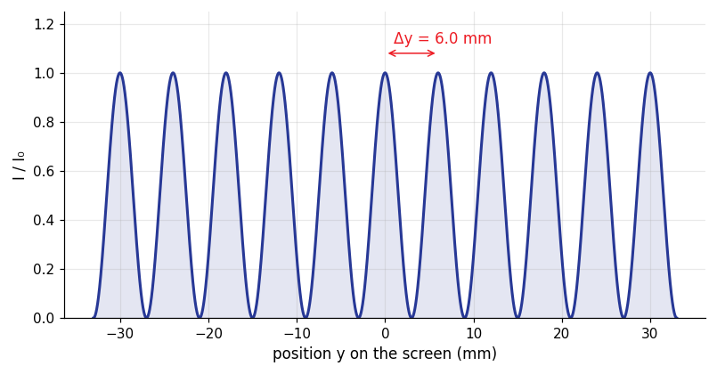
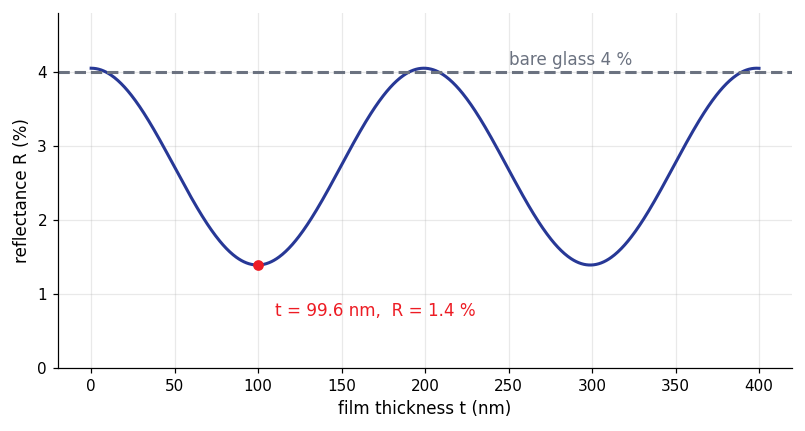
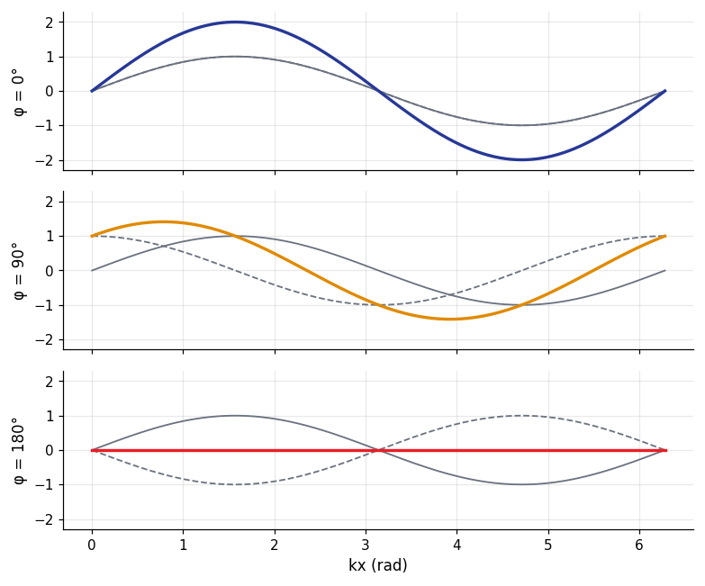

How it is asked: Slit separation from the fringe spacing; Position of the third bright fringe.
Young's double-slit experiment: method and traps
Method
Convert nm, mm to metres.
Fringe spacing $\Delta y=\lambda L/d$ (bright-to-bright or dark-to-dark).
Isolate $d$, $\lambda$ or $L$; film over one slit adds $(n-1)t$ to the path.
Watch out
The central fringe is $m=0$ (bright).
Thin-film interference
Compare the two reflections: each reflection off a denser medium adds a half-wave shift; the film adds $2nt$ to the path.
Key formulas
bright (one shift): $2nt=(m+\tfrac12)\lambda$; dark: $2nt=m\lambda$; (zero or two shifts: reversed); $\lambda_{film}=\lambda/n$
How it is asked: Soap film colours; Anti-reflection coating; Air wedge.
Thin-film interference: method and traps
Method
Count phase shifts: reflection from a higher index medium shifts by $\lambda/2$.
Write the condition for the colour or thickness asked.
Minimum thickness: smallest allowed $m$.
Watch out
Using the wavelength in air instead of in the film.
Double-slit interference pattern

$d=0.20\,\mathrm{mm}$, $\lambda=600\,\mathrm{nm}$, screen at $2.0\,\mathrm{m}$: bright fringes where $d\sin\theta=m\lambda$, spaced by $\Delta y=\lambda L/d=6.0\,\mathrm{mm}$; between them the intensity falls to zero (ideal slits of negligible width).
The same double slit ($d=0.20\,\mathrm{mm}$, $L=2.0\,\mathrm{m}$) with red ($650\,\mathrm{nm}$), green ($530\,\mathrm{nm}$) and blue ($450\,\mathrm{nm}$) light: $\Delta y=\lambda L/d$, so red fringes are the widest and all colours coincide at the central maximum (white light gives a white centre and coloured edges).
$$y_m=\frac{m\lambda L}{d}$$
Anti-reflection coating: reflectance against film thickness

A MgF$_2$ film ($n=1.38$) on glass ($n=1.50$) in air, light of $550\,\mathrm{nm}$. Both reflections invert the wave, so the two beams cancel (as far as their different amplitudes allow) when $2nt=(m+\tfrac12)\lambda$: the first minimum is at $t=\lambda/4n=99.6\,\mathrm{nm}$, where the reflectance falls from $4\,\%$ (bare glass) to $1.4\,\%$.
Superposition of two waves: the phase difference decides the amplitude

Two waves of amplitude $A$ with phase difference $\varphi$ add to a wave of amplitude $2A|\cos(\varphi/2)|$: $2A$ when in phase, $\sqrt2A$ for $\varphi=90^\circ$, zero when they are opposite ($\varphi=180^\circ$).
Practice bank, filtered to this chapter, then written mode
Question analyser: paste a question to see the concepts, formulas and traps
Then the mock exams (Exams page)
Plots and data files
4 plots, each computed from the physical law and checked a second way (numerical integration, an ODE solver, a second formula); the CSV beside each plot holds the numbers behind it, so you can re-plot or fit them. Download all 4 CSV files of this module (zip)
Double-slit interference pattern $d=0.20\,\mathrm{mm}$, $\lambda=600\,\mathrm{nm}$, screen at $2.0\,\mathrm{m}$: bright fringes where $d\sin\theta=m\lambda$, spaced by $\Delta y=\lambda L/d=6.0\,\mathrm{mm}$; between them the intensity falls to zero (ideal slits of negligible width). 3301 rows · columns: y_m, intensity_relCSVFringe spacing depends on the wavelength The same double slit ($d=0.20\,\mathrm{mm}$, $L=2.0\,\mathrm{m}$) with red ($650\,\mathrm{nm}$), green ($530\,\mathrm{nm}$) and blue ($450\,\mathrm{nm}$) light: $\Delta y=\lambda L/d$, so red fringes are the widest and all colours coincide at the central maximum (white light gives a white centre and coloured edges). 2401 rows · columns: y_m, I_650nm, I_530nm, I_450nmCSVAnti-reflection coating: reflectance against film thickness A MgF$_2$ film ($n=1.38$) on glass ($n=1.50$) in air, light of $550\,\mathrm{nm}$. Both reflections invert the wave, so the two beams cancel (as far as their different amplitudes allow) when $2nt=(m+\tfrac12)\lambda$: the first minimum is at $t=\lambda/4n=99.6\,\mathrm{nm}$, where the reflectance falls from $4\,\%$ (bare glass) to $1.4\,\%$. 801 rows · columns: t_nm, reflectance_percentCSVSuperposition of two waves: the phase difference decides the amplitude Two waves of amplitude $A$ with phase difference $\varphi$ add to a wave of amplitude $2A|\cos(\varphi/2)|$: $2A$ when in phase, $\sqrt2A$ for $\varphi=90^\circ$, zero when they are opposite ($\varphi=180^\circ$). 400 rows · columns: kx_rad, sum_phi0, sum_phi90, sum_phi180CSV
Worked examples from the course problems
Worked example 1 · Young's double-slit experiment (Tutorial chapter 35, 35.6)
Coherent light of wavelength $500\,\mathrm{nm}$ passes through two narrow slits. On a very tall screen $2.00\,\mathrm{m}$ away, adjacent maxima near the centre are $3.53\,\mathrm{cm}$ apart. What is the slit separation?
Show the answer and the solution
Answer: $2.83\times10^{-5}\,\mathrm{m}$
Near the centre $\Delta y=\dfrac{\lambda L}{d}\Rightarrow d=\dfrac{\lambda L}{\Delta y}=\dfrac{(500\times10^{-9})(2.00)}{0.0353}=2.83\times10^{-5}\,\mathrm{m}$ ($28\,\mu\mathrm{m}$).
Worked example 2 · Thin-film interference (Tutorial chapter 35, 35.26(a))
A plastic film ($n=1.70$) is applied to a car window ($n=1.52$) to increase the reflectivity. What is the minimum film thickness for which $550\,\mathrm{nm}$ light (in air) reflected from the two sides interferes constructively?
Show the answer and the solution
Answer: $80.9\,\mathrm{nm}$
Reflection at air-film ($1.00<1.70$) gives a half-wave phase change; at film-glass ($1.70>1.52$) none. So the two reflected waves start $\tfrac\lambda2$ out of step, and constructive interference needs $2nt=\left(m+\tfrac12\right)\lambda$.
Minimum ($m=0$): $t=\dfrac{\lambda}{4n}=\dfrac{550}{4(1.70)}=81\,\mathrm{nm}$.
Worked example 3 · Interference of waves (Tutorial chapter 35, 35.2(a))
Two radio antennas A and B radiate in phase; B is $120\,\mathrm{m}$ to the right of A. A point Q lies on the line AB, $40\,\mathrm{m}$ to the right of B. What is the LONGEST wavelength for which the waves interfere destructively at Q?
Show the answer and the solution
Answer: $240\,\mathrm{m}$
At Q the path difference is the separation of the antennas, $\Delta=120\,\mathrm{m}$ (Q is on the line through both).
Destructive: $\Delta=\left(m+\tfrac12\right)\lambda$; the longest wavelength is for $m=0$: $\lambda=2\Delta=240\,\mathrm{m}$.
Worked example 4 · Young's double-slit experiment (Tutorial chapter 35, 35.6)
With that slit separation ($28.3\,\mu\mathrm{m}$, $\lambda=500\,\mathrm{nm}$, screen $2.00\,\mathrm{m}$ away), how far apart on the screen are the $m=49$ and $m=50$ maxima? (Use the exact geometry: the angles are large.)
Show the answer and the solution
Answer: $0.31\,\mathrm{m}$
Positions: $\sin\theta_m=\dfrac{m\lambda}{d}$ and $y_m=L\tan\theta_m$. For $m=49$: $\sin\theta=0.865$, $\theta=59.9^\circ$, $y=3.45\,\mathrm{m}$; for $m=50$: $\sin\theta=0.883$, $\theta=62.0^\circ$, $y=3.76\,\mathrm{m}$.
Separation $=0.31\,\mathrm{m}$ - NOT the small-angle value $3.53\,\mathrm{cm}$: the fringes spread out at large angles.